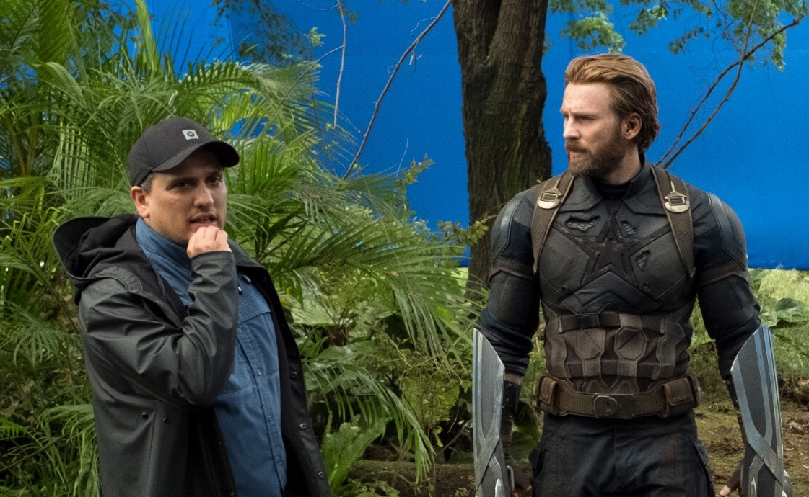

Joe Russo cree que la Inteligencia Artificial podrá crear películas completas en tan solo dos años: "Puedes diseñar una historia específicamente para ti"
Dejando a un lado el "cómo están los máquinas, lo primero de todo", no cabe duda de que la inteligencia artificial y todo lo que gira en torno a ella es el tema del momento, lleva siéndolo meses y no tiene pinta de dejar de serlo en un futuro próximo. El problema es que cada noticia sobre la IA que trasciende termina oscilando entre la pesadilla distópica y la venta de humo que la promociona como el tercer advenimiento de Cristo.
"Estoy en la junta directiva de unas cuantas compañías de Inteligencia Artificial. Voy a hablar desde mi experiencia estando en esas compañías, y hay empresas centradas en la IA desarrollando IAs para protegerte de las IAs. Y, desgraciadamente, estamos en ese mundo, y necesitarás una IA en tu vida porque, queramos verla desarrollada o no, la gente puede desarrollarla igualmente. Así que vamos hacia ese futuro. La pregunta es, ¿cómo nos protegemos en ese futuro?".
En esta segunda liga encontramos las últimas declaraciones de Joe Russo, codirector de la dupla marvelita compuesta por 'Vengadores: Infinity War' y 'Vengadores: Endgame', quien ha confesado a Collider estar en la junta directiva de varias empresas relacionadas con el desarrollo de IAs y ha vislumbrado un futuro en el que todos necesitaremos una. Claro, qué iba a decir si no.
Si las declaraciones de Russo, que suele ser bastante caótico en su modo de expresarse, ya os han hecho arquear una ceja, agarraos, porque vienen curvas. Cuando se ha preguntado cuántos años tardaría una inteligencia artificial en crear una película por sí sola, el cineasta ha sentenciado que "dos años". Así, sin más.
Lo más demencial del asunto llega cuando el bueno de Joe teoriza sobre cómo funcionaría este proceso de generación de ficciones audiovisuales; en el que la IA usará avatares fotorrealistas nuestros y de actores y actrices para dar forma a relatos confeccionados a nuestro gusto.
"Potencialmente, lo que podrás hacer con las IA, obviamente, es usarla para diseñar y modificar la narración. Así que tienes una historia en constante evolución, ya sea en un videojuego o en una película o en una serie de televisión. Puedes entrar en casa y guardar la IA en tu plataforma de streaming. 'Hey, quiero una película protagonizada por mi avatar fotorrealista y el avatar fotorrealista de Marilyn Monroe. Quiero que sea una comedia romántica, porque he tenido un día duro', y renderiza una historia muy competente con diálogo que imita tu voz. Imita tu voz y, de repente, tienes una comedia romántica de 90 minutos protagonizada por ti. Así que puedes diseñar una historia específicamente para ti".
¿Está tirando Russo piedras sobre su propio tejado? ¿Está siendo inteligente al invertir en tecnológicas especializadas en IA? ¿Nos encontramos ante una nueva especie hermanada con los cryptobros que podríamos denominar los IA-Bros? Sólo el tiempo lo dirá; por el momento, seguiremos confiando en los entes de carne y hueso...